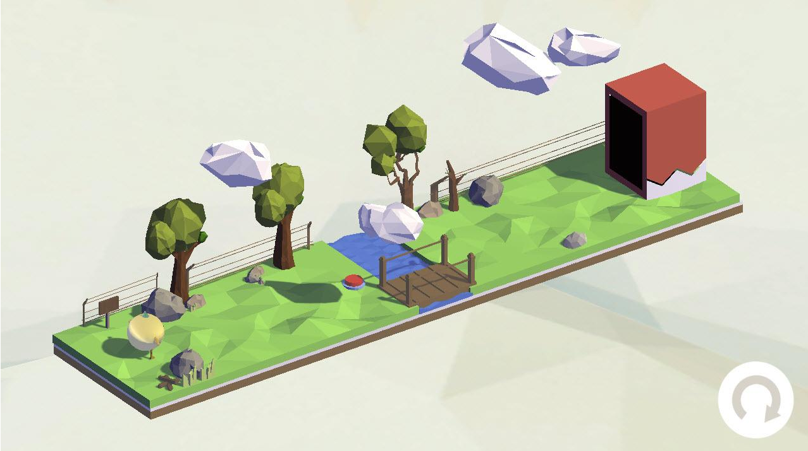

移动端解谜游戏 《One Way》
这是一个移动端的 3D LowPoly 风格解谜游戏。
项目分工
两人开发，我担任程序。
游戏简介
游戏方法很简单：点击屏幕时，小人会停下；松开屏幕时，小人会继续走。利用这个简单的机制做了 6 个关卡，并熟悉了 Unity 移动端游戏的开发。

这是一个移动端的 3D LowPoly 风格解谜游戏。
两人开发，我担任程序。
游戏方法很简单：点击屏幕时，小人会停下；松开屏幕时，小人会继续走。利用这个简单的机制做了 6 个关卡，并熟悉了 Unity 移动端游戏的开发。